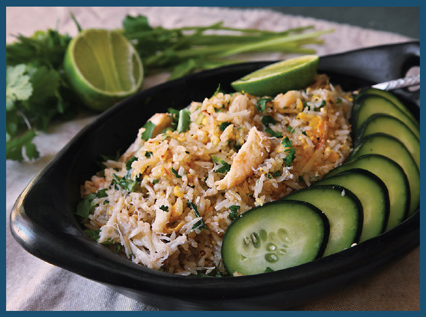

THAI-STYLE CRAB FRIED RICE
My wife, Adri, is a crab fiend. I once watched her down a full pound of picked crabmeat in a covered market in Bangkok, pulling the crab—still warm from cooking—piece by piece out of a Styrofoam tray, dipping it into nam pla prik, and sucking the juices off her fingers as she went. That’s just about a full 1 percent of her body weight!

Southeast Asia is a great place for crab lovers,* and there are worse ways to eat it than in Thai khao pad pu—fried rice with crab, made with fragrant jasmine rice that’s gently seasoned with garlic and chiles, then tossed with scrambled egg, picked crabmeat, and scallions, finished with a little fish sauce, and served with cilantro and cucumbers.
Knowing how much Adri loves crab, I decided to treat her with this recipe. It’s custom-made for crab lovers.
Now that I’ve set out my rules for fried rice, once again I’m going to go ahead and break them right from the get-go. Instead of adding my rice directly to hot oil, then subsequently adding aromatics, for this recipe I’m starting with the aromatics and letting them infuse the oil before adding the rice. This sequence—aromatics before main ingredient—is common in Thai stir-fries, which tend to use a little less heat and rely less on wok hei than Chinese stir-fries.
Next, in go some minced garlic and finely sliced Thai bird chiles. If you (or maybe a loved one you are serving this to) are particularly sensitive to heat, omit the chiles. They can always be added later on at the table.† To this infused oil, I add the rice and scrambled egg.
Don’t you hate that feeling you get at amusement parks when, just as you start really getting into a ride, it’s over and that spotty-faced teenager is forcing you to get out of the car? I get that feeling with cooking in a wok sometimes. We’ve only just begun this delicious fried rice trip, but unfortunately, it’s also almost at a close.
The last two twists in the track: the crab and the scallions. I like to add the crab in large chunks. Around these parts, that means Dungeness crab claws, knuckles, and legs, roughly torn into bite-sized pieces by hand. Back on the East Coast, it’s probably jumbo lump blue crab, in pieces as large as you can find.
Fresh-cooked crab or frozen crab is your best bet here, but canned crabmeat will do in a pinch if you can’t find fresh. Canned crab tends to have a much stronger seafood aroma, which can be offputting to some people (like me). I add the crab along with some sliced scallions, cooking it only long enough to heat everything through. You don’t want to overcook that crab!
Because jasmine rice is so fragrant, it requires very little in the way of sauce or extra seasoning. I add a couple of teaspoons of fish sauce, then season to taste with salt and white pepper. Stir in some cilantro, then serve the rice immediately with some sliced cucumber on the side, along with extra fish sauce and Thai chiles (for the brave). And, if your dining companion is anything like Adri, stand back, because you don’t want to get caught in the cross fire as she sets her sights on the crab.
*Though it might be a good idea to confirm what you’re ordering. At a small beachside restaurant in the Vietnamese fishing and resort village of Phan Thiet, we perused a menu that offered both “crap soup” and “real crap soup.” We opted for the former.
†On second thought, think long and hard about the state of the relationship between you and that chile-sensitive loved one, then decide whether it’s the chiles or the loved one that stays or goes.